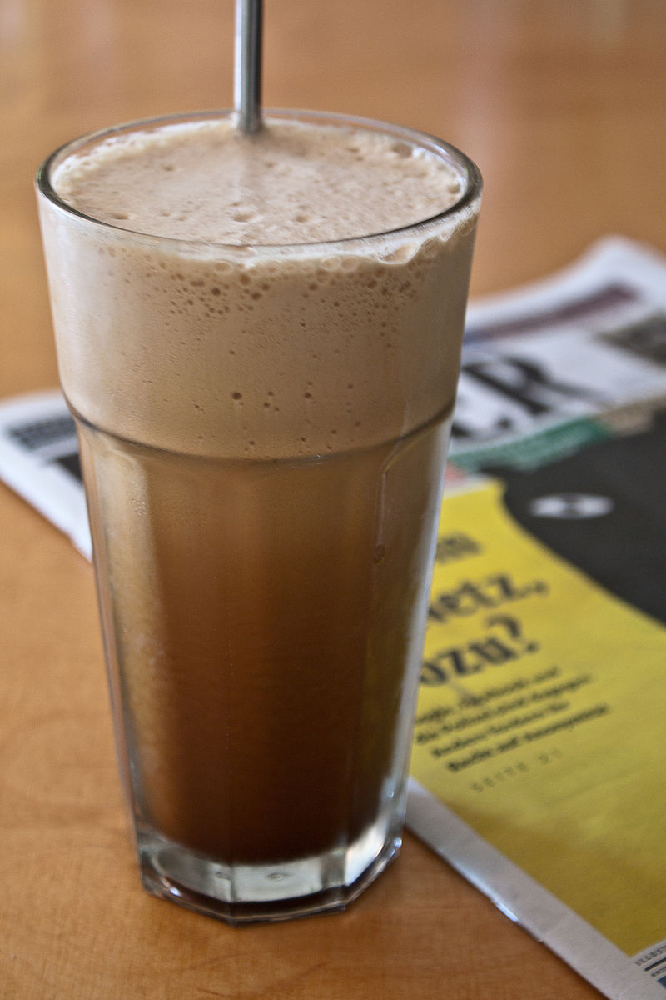

Frappe

Ingredients
- 3 cups ice cubes
- 1 cup 2% milk
- 1 cup strong brewed coffee, chilled
- 2 tablespoons sugar-free caramel topping
- 2 teaspoons vanilla extract
- 3 (1 gram) packets granular sucralose sweetener (such as Splenda®), or to taste
- 1 tablespoon fat-free frozen whipped topping, thawed
- 1 tablespoon sugar-free caramel topping
Steps
- Combine ice, milk, coffee, 2 tablespoons caramel topping, vanilla extract, and sucralose sweetener in a blender.
- Pulse until ice is crushed to a smooth and thick consistency.
- Pour into a mug or tall glass; decorate with whipped topping.
- Drizzle 1 tablespoon caramel syrup on top.